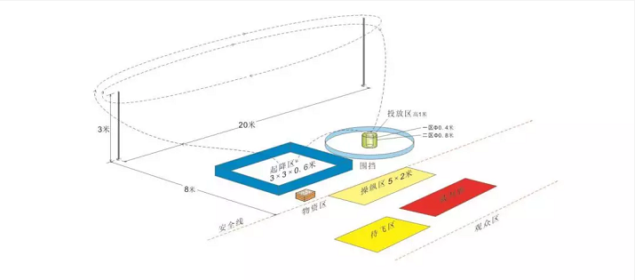

垂直起降规则
1.任务描述
遥控模型从起降区搭载一定载重物起飞，顺时针绕标杆飞行两圈，飞行至投放区上空投放载荷后，安全返回起降区降落，循环往返直至比赛结束。比赛以限时内有效投放载荷总质量大者取胜。
2.技术要求
2.1 模型质量、布局、结构形式等不限，但模型不得有轻于空气的结构部分。
2.2 模型动力必须为电动，且电机数量不超过 2 个，电机、电池、螺旋桨等由航模队提供。
2.3 模型起飞不得借助外力或其它装置，模型可带动力着陆，但必须在螺旋桨停止转动后方可进行装载。
2.4 起降区内，除模型外不得放置任何设备。
2.5 载重物为直径 150mm的泡沫球，由组委会提供。
2.6不限制载重物的装载方式。
3. 场地设置
3.1 任务区设操纵区、起降区、投放区、 标杆。
3.1.2 投放区为圆形区域。
3.1.3 载重物存放在物资区内。
3.1.4比赛中操纵员不得离开操纵区。除更换备机外任何人不得进入起降区。
3.2 安全区 工作区和观众区设置在安全区，比赛场馆内除任务区外均为安全区，以视场地情况划定的区域边线和搭设的安全网为界。
4. 运动员
4.1 该项目每个机组最多 3 人。
4.2 每个机组由操纵员 1 人、助手不超过 2 人组成机组参加比赛。
5. 竞赛方法
5.1 比赛进行两轮。
5.2 每轮比赛进场准备时间为2分钟 ，比赛时间为3分钟 。
5.3 比赛时间内运动员操纵模型完成若干次起飞、绕标、投放和降落动作，超过比赛时间完成的动作不予计分。
5.4 模型的装载和飞行。
5.5 模型的空投模型应顺时针绕标杆飞行两圈才可进行空投，模型绕两标杆的外侧，从图示左侧标杆飞向右侧标杆两次后，即为完成两圈飞行。
5.6 装载时模型应在起降区内，只有装载人员不得进入起降区，不得和模型有任何接触 。
6. 成绩评定
6.1 单轮得分为竞赛时间内的起飞分与每次飞行的空投分
6.2 起飞分：起飞成功得 50分，即s1=50 *n
n为成功起飞次数
6.3 单次飞行的空投分： 投入到投放区内的载重物，按载重物的数量和模型重量计算空投分，计分规则如下所示；载重物未投入投放区时，不予计分。
6.3.1模型重量：
不带球情况下秤取模型重量为x *100g
不足100g部分按100g计.
6.3.2投掷得分
投入一个球的得分为100/x,如重量200g,成功投掷一个球，得分为50分
即s2=n*(100/x)
N为投入球的数量
6.3.3最终得分
S总=s1+s2-扣分
6.4比分相同的情况
以重量轻者排名高
7. 判罚
7.1 比赛时间内参赛人员第一次与模型发生接触，扣 10 分。
7.2 有下列情况之一者该轮比赛终止，已取得的成绩有效。
7.2.1 操纵员双脚离开操纵区。
7.2.2 模型第一次离地后，对模型进行维修和调试（无论取出与否）。
7.2.3 比赛中，模型因故障无法继续飞行或经裁判员认定不能保证飞行安全。
7.2.4 螺旋桨未停止转动进行装载两次（第一次警告）。
7.2.5 参赛人员第二次与模型发生接触（包括通过其他物体）
7.3 有下列情况之一者该轮成绩判为零分。
7.3.1 模型未按规定绕杆飞行两圈且进行了空投。
7.3.2 比赛时间到仍继续向投放区空投。
7.3.3 模型借助外力或其他装置起飞。
